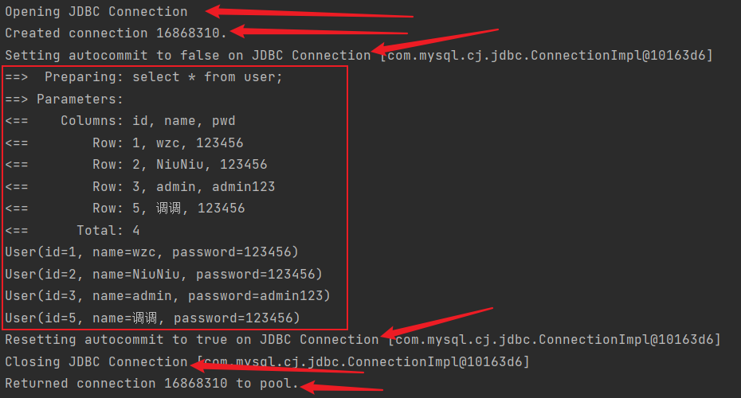
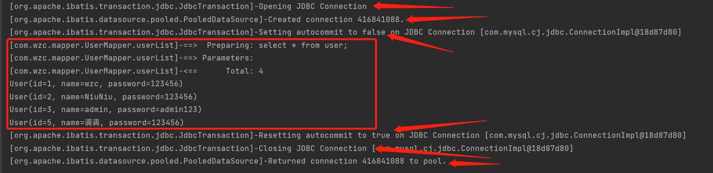
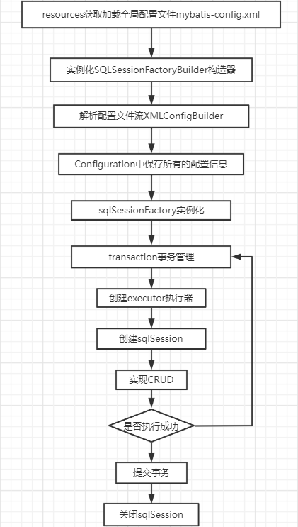
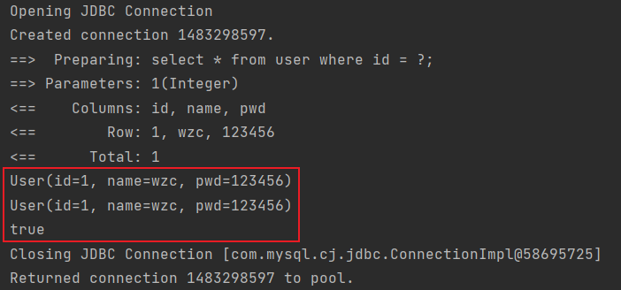
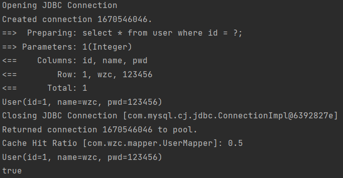
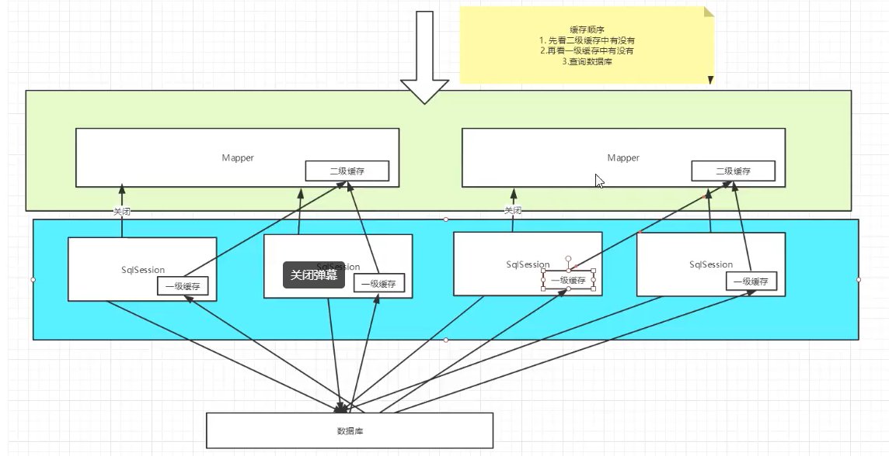

Mybatis笔记
Mybatis笔记

Mybatis
1、第一个Mybatis程序
1.1、搭建环境
搭建数据库：
CREATE DATABASE `mybatis`;
USE `mybatis`;
CREATE TABLE `user` (
`id` INT(20) NOT NULL PRIMARY KEY,
`name` VARCHAR(30) DEFAULT NULL,
`pwd` VARCHAR(30) DEFAULT NULL
)ENGINE = INNODB DEFAULT CHARSET = utf8;
新建项目：
- 新建一个maven项目
- 删除src目录
- 导入maven依赖
<dependencies>
<!--mysql驱动-->
<dependency>
<groupId>mysql</groupId>
<artifactId>mysql-connector-java</artifactId>
<version>8.0.25</version>
</dependency>
<!--mybatis-->
<dependency>
<groupId>org.mybatis</groupId>
<artifactId>mybatis</artifactId>
<version>3.5.6</version>
</dependency>
<dependency>
<groupId>junit</groupId>
<artifactId>junit</artifactId>
<version>4.13</version>
<scope>test</scope>
</dependency>
<!-- https://mvnrepository.com/artifact/org.projectlombok/lombok -->
<dependency>
<groupId>org.projectlombok</groupId>
<artifactId>lombok</artifactId>
<version>1.18.22</version>
<scope>provided</scope>
</dependency>
</dependencies>
1.2、创建一个模块
- 编写mybatis的核心配置文件
<?xml version="1.0" encoding="UTF-8" ?>
<!DOCTYPE configuration
PUBLIC "-//mybatis.org//DTD Config 3.0//EN"
"http://mybatis.org/dtd/mybatis-3-config.dtd">
<!--核心配置文件-->
<configuration>
<environments default="development">
<environment id="development">
<!--事务管理-->
<transactionManager type="JDBC"></transactionManager>
<dataSource type="POOLED">
<property name="driver" value="com.mysql.jdbc.Driver"/>
<property name="url" value="jdbc:mysql://localhost:3306/mybatis?userSSL=true&useUnicode=true&characterEncoding=utf-8&serverTimezone=GMT%2B8"/>
<property name="username" value="root"/>
<property name="password" value="123456"/>
</dataSource>
</environment>
</environments>
<!--每一个mapper.xml都需要在mybatis配置文件中注册-->
<mappers>
<mapper resource="com/wzc/dao/UserMapper.xml"/>
</mappers>
</configuration>
- 编写mybatis的工具类
//sqlSessionFactory --> sqlSession
public class MybatisUtils {
private static SqlSessionFactory sqlSessionFactory;
static {
try {
//使用Mybatis获取sqlSessionFactory对象
String resource = "mybatis-config.xml";
InputStream inputStream = Resources.getResourceAsStream(resource);
sqlSessionFactory = new SqlSessionFactoryBuilder().build(inputStream);
} catch (IOException e) {
e.printStackTrace();
}
}
public static SqlSession getSqlSession() {
return sqlSessionFactory.openSession();
}
}
1.3、编写代码
- 实体类
@Data
@AllArgsConstructor
@NoArgsConstructor
public class User {
private int id;
private String name;
private String pwd;
}
- Dao接口
public interface UserDao {
List<User> userList();
}
- mapper.xml
<?xml version="1.0" encoding="UTF-8" ?>
<!DOCTYPE mapper
PUBLIC "-//mybatis.org//DTD Mapper 3.0//EN"
"http://mybatis.org/dtd/mybatis-3-mapper.dtd">
<mapper namespace="com.wzc.dao.UserDao">
<select id="userList" resultType="com.wzc.pojo.User">
select * from user;
</select>
</mapper>
1.4、测试
public class UserDaoTest {
@Test
public void test1() {
//获取sqlSession对象
SqlSession sqlSession = MybatisUtils.getSqlSession();
try {
//方法一：getMapper，推荐（不需要强转以及写错字符串）
UserDao mapper = sqlSession.getMapper(UserDao.class);
List<User> userList = mapper.userList();
//方法二：不推荐使用
//List<User> userList = sqlSession.selectList("com.wzc.dao.UserDao.userList");
for (User user : userList) {
System.out.println(user);
}
} finally {
//关闭sqlSession
sqlSession.close();
}
}
}
2、CRUD
2.1 namespace
namespace中的包名要和mapper接口的包名一致
2.2、select
查询语句
- id：对应接口中的方法名
- resultType：sql语句的返回值
- parameterType：参数类型
<select id="getUserById" parameterType="int" resultType="com.wzc.pojo.User">
select * from user where id = #{id};
</select>
public class UserDaoTest {
@Test
public void userListTest() {
try (SqlSession sqlSession = MybatisUtils.getSqlSession()) {
UserDao mapper = sqlSession.getMapper(UserDao.class);
List<User> userList = mapper.userList();
for (User user : userList) {
System.out.println(user);
}
}
}
}
2.3、insert
<insert id="addUser" parameterType="com.wzc.pojo.User">
insert into user (id, name, pwd) values (#{id}, #{name}, #{pwd});
</insert>
2.4、update
<update id="updateUserById" parameterType="com.wzc.pojo.User">
update user set name = #{name}, pwd = #{pwd} where id = #{id};
</update>
2.5、delete
<delete id="deleteUserById" parameterType="int">
delete from user where id = #{id};
</delete>
注意点：
- 增删改操作都需要提交事务：sqlSession.commit();
3、万能Map
当实体类中字段过多时，应当考虑使用Map
public interface UserDao {
int addUserMap(Map<String, Object> user);
}
Map传递参数直接在sql中取出key即可
4、模糊查询
- 传递带通配符的参数
public class UserDaoTest {
List<User> userList = mapper.getUserLikeName("%i%");
}
- 在sql中拼接通配符
<select id="getUserLikeName" resultType="com.wzc.pojo.User">
select * from user where name like concat('%', #{name}, '%');
</select>
5、配置解析
5.1、核心配置文件
- mybatis-config.xml
configuration（配置）
properties（属性）
settings（设置）
typeAliases（类型别名）
typeHandlers（类型处理器）
objectFactory（对象工厂）
plugins（插件）
environments（环境配置）
environment（环境变量）
transactionManager（事务管理器）
dataSource（数据源）
databaseIdProvider（数据库厂商标识）
mappers（映射器）
5.2、环境配置（environments）
Mybatis可以配置成适应多种环境，但是尽管可以配置多种环境，每个SqlSessionFactory实例只能选择一种环境
Mybatis默认的事务管理器就是JDBC
5.3、属性（properties）
属性可以外部配置和动态替换，既可以在java属性文件中配置，也可以使用properties子元素指定
编写配置文件db.properties
driver=com.mysql.jdbc.Driver
url=jdbc:mysql://localhost:3306/mybatis?userSSL=true&useUnicode=true&characterEncoding=utf-8&serverTimezone=GMT%2B8
#username=root
#password=123456
在核心配置文件中引入
<configuration>
<!--引入外部配置文件-->
<properties resource="db.properties">
<!--优先读取property属性指定的配置，然后才读取外部配置文件覆盖同名属性-->
<property name="username" value="root"/>
<property name="password" value="123456"/>
</properties>
</configuration>
优先读取property标签中的属性，然后读取外部配置文件中的属性并覆盖同名的属性
5.4、类型别名（typeAliases）
- 类型别名是为java类型设置一个短的名字
- 存在的意义仅在于用来减少类完全限定名的冗余
<typeAliases>
<typeAlias type="com.wzc.pojo.User" alias="User"/>
</typeAliases>
也可以指定一个包名，Mybatis会在包名下面搜索需要的java bean，默认的别名为类名
<typeAliases>
<!--<typeAlias type="com.wzc.pojo.User" alias="User"/>-->
<package name="com.wzc.pojo"/>
</typeAliases>
5.5、设置（settings）
- logImpl：指定Mybatis所用日志
- cacheEnabled：全局开启或关闭缓存
- lazyLoadingEnabled：全局懒加载开关
6、其他配置
- typeHandler（类型处理器）
- objectFactory（类型工厂）
- plugins（插件）
- mybatis-generator-core
- mybatis-plus
- 通用mapper
7、映射器（mappers）
MapperRegistry：注册绑定Mapper文件
方法一：【推荐使用】
<!--每一个mapper.xml都需要在mybatis配置文件中注册-->
<mappers>
<mapper resource="com/wzc/mapper/UserMapper.xml"/>
</mappers>
方法二：使用class文件绑定注册
<mappers>
<mapper class="com.wzc.mapper.UserMapper"/>
</mappers>
注意点：
- 接口和Mapper配置文件必须同名
- 接口和Mapper配置文件必须在同一个包下
方法三：使用扫描包进行注入
注意点和方法二一样
<mappers>
<package name="com.wzc.mapper"/>
</mappers>
8、生命周期和作用域
生命周期和作用域是重要的，因为错误的使用会导致严重的并发问题
SqlSessionFactoryBuilder：
- 一旦创建了SqlSessionFactory，就不再需要SqlSessionFactoryBuilder
- 局部变量
SqlSessionFactory：
- 可以理解为数据库连接池
- 一旦创建就应该在程序运行期间一直存在，
- 没有理由丢弃或重新创建一个实例（单例模式或静态单例模式实现）
- SqlSessionFactory的最佳作用域是应用作用域
SqlSession：
- 可以理解为连接池的一个请求
- SqlSession实例不是线程安全的，所以不能被共享，最佳作用域是请求或方法作用域
- 用完之后需要关闭，释放资源
9、resultMap
结果集映射，解决数据库字段名与实体类属性名称不一致的问题
<resultMap id="UserMap" type="User">
<!--column：数据库中的字段，property：实体类中的属性-->
<result column="id" property="id"/>
<result column="name" property="name"/>
<result column="pwd" property="password"/>
</resultMap>
10、日志
10.1、日志工厂
Mybatis的settings中提供了日志配置的设置logImpl 支持的选项有：
- SLF4J
- LOG4J【掌握】
- LOG4J2
- JDK_LOGGING
- COMMONS_LOGGING
- STDOUT_LOGGING【掌握】
- NO_LOGGING
STDOUT_LOGGING标准日志输出：
<settings>
<setting name="logImpl" value="STDOUT_LOGGING"/>
</settings>

6.2、Log4j
- 先导入log4j的包
<dependency>
<groupId>org.apache.logging.log4j</groupId>
<artifactId>log4j-core</artifactId>
<version>2.17.1</version>
</dependency>
- log4j.properties
# 将等级为DEBUG的日志输出到console和file这两个目的地
log4j.rootLogger=DEBUG,console
# ,file
# 控制台输出相关设置
log4j.appender.console=org.apache.log4j.ConsoleAppender
log4j.appender.console.Target=System.out
log4j.appender.console.Threshold=DEBUG
log4j.appender.console.layout=org.apache.log4j.PatternLayout
log4j.appender.console.layout.ConversionPattern=[%c]-%m%n
# 文件输出相关设置
# log4j.appender.file=org.apache.log4j.RollingFileAppender
# log4j.appender.file.File=输出文件路径
# log4j.appender.file.MaxFileSize=最大文件大小
# log4j.appender.file.Threshold=DEBUG
# log4j.appender.console.layout=org.apache.log4j.PatternLayout
# log4j.appender.console.layout.ConversionPattern=[%p][%d{yy-MM-dd}][%c]%m%n
# 日志输出级别
log4j.logger.org.mybatis=DEBUG
log4j.logger.java.sql=DEBUG
log4j.logger.java.sql.Statement=DEBUG
log4j.logger.java.sql.ResultSet=DEBUG
log4j.logger.java.sql.PreparedStatement=DEBUG
- 配置log4j日志实现
<settings>
<setting name="logImpl" value="LOG4J"/>
</settings>

简单使用
- 导入org.apache.log4j.Logger
- 获取日志对象
static Logger logger = Logger.getLogger(UserMapperTest.class);
- 日志级别
logger.info("info: 进入了test2");
logger.debug("debug: 进入了test2");
logger.error("error: 进入了test2");
7、分页
7.1、使用limit分页
select * from user limit startIndex, pageSize;
使用Mybatis实现分页，核心为sql
- 接口
List<User> userPage(Map<String, Integer> condition);
- Mapper.xml
<select id="userPage" parameterType="map" resultMap="UserMap">
select * from user limit #{startIndex}, #{pageSize};
</select>
- 测试
@Test
public void userPageTest() {
try (SqlSession sqlSession = MybatisUtil.getSqlSession()) {
UserMapper mapper = sqlSession.getMapper(UserMapper.class);
Map<String, Integer> condition = new HashMap<>();
condition.put("startIndex", 1);
condition.put("pageSize", 2);
List<User> userList = mapper.userPage(condition);
for (User user : userList) {
System.out.println(user);
}
}
}
7.2、RowBounds分页【不推荐使用】
- 接口
List<User> userRowBounds();
- mapper.xml
<select id="userRowBounds" resultMap="UserMap">
select * from user;
</select>
- 测试
@Test
public void userRowBoundsTest() {
try (SqlSession sqlSession = MybatisUtil.getSqlSession()) {
List<User> userList = sqlSession.selectList("com.wzc.mapper.UserMapper.userRowBounds", null, new RowBounds(1, 2));
for (User user : userList) {
System.out.println(user);
}
}
}
7.3、分页插件
pageHelper：https://pagehelper.github.io/docs/howtouse/
8、使用注解开发
- 接口
public interface UserMapper {
@Select("select * from user")
List<User> userList();
}
- 配置文件中绑定接口
<mappers>
<mapper class="com.wzc.mapper.UserMapper"/>
</mappers>
Mybatis实现流程

8.1、注解CRUD
public interface UserMapper {
@Select("select * from user")
List<User> userList();
//方法存在多个参数时，所有参数前面必须加上@Param注解
@Select("select id, name, pwd as password from user where id = #{id}")
User getUserById(@Param("id") int id);
@Insert("insert into user(id, name, pwd) values(#{id}, #{name}, #{password})")
int addUser(User user);
@Update("update user set name = #{name}, pwd = #{password} where id = #{id}")
int updateUser(User user);
@Delete("delete from user where id = #{id}")
int deleteUser(@Param("id") int id);
}
【注意：必须将接口绑定到配置文件中】
关于@Param注解
- 基本类型或String类型需要添加@Param注解，引用类型不需要添加
9、Lombok
- 安装插件
- 导入jar包
<dependency>
<groupId>org.projectlombok</groupId>
<artifactId>lombok</artifactId>
<version>1.18.22</version>
<scope>provided</scope>
</dependency>
- 在实体类上加注解
10、多对一处理
CREATE TABLE `teacher`(
`id` INT(10) NOT NULL,
`name` VARCHAR(30) DEFAULT NULL,
PRIMARY KEY (`id`)
) ENGINE=INNODB DEFAULT CHARSET=utf8;
INSERT INTO `teacher`(`id`, `name`) VALUES (1, '张老师');
CREATE TABLE `student` (
`id` INT(10) NOT NULL,
`name` varchar(30) DEFAULT NULL,
`tid` INT(10) DEFAULT NULL,
PRIMARY KEY (`id`),
KEY `fktid` (`tid`),
CONSTRAINT `fktid` FOREIGN KEY (`tid`) REFERENCES `teacher` (`id`)
) ENGINE=INNODB DEFAULT CHARSET=utf8;
INSERT INTO `student` (`id`, `name`, `tid`) VALUES (1, '小明', 1);
INSERT INTO `student` (`id`, `name`, `tid`) VALUES (2, '小李', 1);
INSERT INTO `student` (`id`, `name`, `tid`) VALUES (3, '小赵', 1);
INSERT INTO `student` (`id`, `name`, `tid`) VALUES (4, '小王', 1);
10.1、按照查询嵌套处理（子查询）
<mapper namespace="com.wzc.mapper.StudentMapper">
<resultMap id="studentTeacher" type="Student">
<result property="id" column="id"/>
<result property="name" column="name"/>
<!--对象：association，集合：collection-->
<association property="teacher" column="tid" javaType="Teacher" select="selectTeacher"/>
</resultMap>
<select id="studentList" resultMap="studentTeacher">
select * from student
</select>
<select id="selectTeacher" resultType="Teacher">
select * from teacher where id = #{tid}
</select>
</mapper>
10.2、按照结果嵌套处理（联表查询）
<mapper>
<resultMap id="studentTeacher" type="Student">
<result property="id" column="sid"/>
<result property="name" column="sname"/>
<association property="teacher" javaType="Teacher">
<result property="id" column="tid"/>
<result property="name" column="tname"/>
</association>
</resultMap>
<select id="studentList" resultMap="studentTeacher">
select s.id sid, s.name sname, t.id tid, t.name tname from student s left join teacher t on t.id = s.tid
</select>
</mapper>
11、一对多处理
一个老师教多个学生
11.1、按结果嵌套（联表查询）
<mapper namespace="com.wzc.mapper.TeacherMapper">
<!--按结果嵌套-->
<resultMap id="teacherStudent" type="Teacher">
<result property="id" column="tid"/>
<result property="name" column="tname"/>
<collection property="students" ofType="Student">
<result property="id" column="sid"/>
<result property="name" column="sname"/>
<result property="tid" column="stid"/>
</collection>
</resultMap>
<select id="getTeacher" resultMap="teacherStudent">
select t.id tid, t.name tname, s.id sid, s.name sname, s.tid stid from teacher t left join student s on t.id = s.tid where t.id = #{id}
</select>
</mapper>
11.2、按查询嵌套
<mapper>
<resultMap id="teacherStudent" type="Teacher">
<result property="id" column="id"/>
<result property="name" column="name"/>
<collection property="students" column="id" javaType="ArrayList" ofType="Student" select="studentList"/>
</resultMap>
<select id="getTeacher" resultMap="teacherStudent">
select * from teacher where id = #{id}
</select>
<select id="studentList" resultType="Student">
select * from student where tid = #{id}
</select>
</mapper>
11.3、小结
- 关联-association【多对一】
- 集合-collection【一对多】
- javaType：用来指定实体类中属性的类型
- ofType：用来指定泛型的类型
- 注意点：
- 保证sql的可读性
- 多对一和一对多中，属性名和字段的问题
12、动态SQL
动态SQL就是根据不同的条件生成不同的SQL语句
CREATE TABLE `blog` (
`id` bigint NOT NULL COMMENT '博客id',
`title` varchar(100) NOT NULL COMMENT '博客标题',
`author` varchar(30) NOT NULL COMMENT '博客作者',
`create_time` datetime NOT NULL COMMENT '创建时间',
`views` int NOT NULL COMMENT '浏览量'
) ENGINE=InnoDB DEFAULT CHARSET=utf8;
实体类
@Data
public class Blog {
private int id;
private String title;
private String author;
private Date createTime;
private int views;
}
12.1、IF标签
<select id="blogListByIf" parameterType="Map" resultType="Blog">
select * from blog
<where>
<if test="title != null">
and title like concat("%", #{title}, "%")
</if>
<if test="author != null">
/*从第二个if开始必须要加and*/
and author like concat("%", #{author}, "%")
</if>
</where>
</select>
12.2、choose（when, otherwise）
类似switch-case
<select id="blogListByChoose" parameterType="Map" resultType="Blog">
select * from blog
<where>
<choose>
<when test="title != null">
/*当一个choose前还有choose标签的时候第一个条件也要加and*/
and title like concat("%", #{title}, "%")
</when>
<when test="author != null">
and author like concat("%", #{author}, "%")
</when>
<otherwise>
/*前面都不执行时会执行otherwise*/
and views >= 1000
</otherwise>
</choose>
</where>
</select>
12.3、trim（where, set）
<update id="updateBlog" parameterType="Blog">
update blog
<set>
<if test="title != null">
title = #{title},
</if>
<if test="author != null">
author = #{author},
</if>
</set>
where id = #{id}
</update>
SQL片段
- 使用sql标签抽取公共的sql
<sql id="ifSql">
<if test="title != null">
and title like concat("%", #{title}, "%")
</if>
<if test="author != null">
/*从第二个if开始必须要加and*/
and author like concat("%", #{author}, "%")
</if>
</sql>
- 在需要的地方使用include引用
<select id="blogListByIf" parameterType="Map" resultType="Blog">
select * from blog
<where>
<include refid="ifSql"></include>
</where>
</select>
注意点：
- 最好基于单表定义sql片段
- 不要存在where标签
12.4、foreach
collection：要遍历集合的参数名 item：遍历项 open：起始追加 close：结尾追加 separate：分隔符
<select id="blogListByForeach" parameterType="List" resultType="Blog">
select * from blog where
<foreach collection="ids" item="id" open="(" close=")" separator="or">
id = #{id}
</foreach>
</select>
13、Mybatis缓存
- Mybatis系统中定义了两级缓存：一级和二级缓存
- 默认情况下，只有一级缓存开启（sqlSession级别的缓存，也称为本地缓存）
- 二级缓存需要配置开启，也可以通过实现Cache接口实现（namespace级别的缓存，也称为全局缓存）
13.1、一级缓存
public class UserMapperTest {
@Test
public void test1() {
try (SqlSession sqlSession = MybatisUtil.getSqlSession()) {
/*一级缓存：sqlSession级别，第二次查询时从缓存中取结果，两次查询的结果相同*/
UserMapper mapper = sqlSession.getMapper(UserMapper.class);
User user1 = mapper.getUserById(1);
User user2 = mapper.getUserById(1);
System.out.println(user1);
System.out.println(user2);
System.out.println(user1 == user2);
}
}
}

缓存失效情况：
- 增删改操作，可能会改变数据，所以会刷新缓存
- 查询不同的sql
- 查询不同的mapper
- 手动清除缓存（sqlSession.clearCache()）
小结：一级缓存是默认开启的，只在一次sqlSession中有效
13.2、二级缓存
二级缓存工作机制：
- 当一次会话关闭后，一级缓存中的数据会被保存到二级缓存中，新会话从二级缓存中获取数据
- 不同的mapper对应不同的二级缓存
使用步骤：
- 开启二级缓存（默认就是开启的）
<!--开启二级缓存-->
<setting name="cacheEnabled" value="true"/>
- mapper.xml中添加cache标签
<!--在当前mapper中使用二级缓存，FIFO策略，每60秒刷新缓存，缓存空间大小512，只读-->
<cache eviction="FIFO" flushInterval="60000" size="512" readOnly="true"/>
- 测试
public class UserMapperTest {
@Test
public void test2() {
try (SqlSession sqlSession1 = MybatisUtil.getSqlSession();
SqlSession sqlSession2 = MybatisUtil.getSqlSession()) {
UserMapper mapper1 = sqlSession1.getMapper(UserMapper.class);
UserMapper mapper2 = sqlSession2.getMapper(UserMapper.class);
User user1 = mapper1.getUserById(1);
System.out.println(user1);
sqlSession1.close();
/*一级缓存关闭后，其中的数据会保存到二级缓存，再次查询从二级缓存中获取数据*/
User user2 = mapper2.getUserById(1);
System.out.println(user2);
System.out.println(user1 == user2);
}
}
}

注意： 实体类需要实现Serializable接口序列化，否则会报NotSerializableException
13.3、缓存原理
- 先看二级缓存中有没有
- 再看一级缓存中有没有
- 查询数据库 
13.6、自定义缓存ehcache
Ehcache是一种广泛使用的开源java分布式缓存，主要面向通用缓存
- 导包
<dependency>
<groupId>org.mybatis.caches</groupId>
<artifactId>mybatis-ehcache</artifactId>
<version>1.2.2</version>
</dependency>
- 配置文件指定使用ehcache
<cache type="org.mybatis.caches.ehcache.EhcacheCache"/>
- 编写ehcache的配置文件
<?xml version="1.0" encoding="UTF-8"?>
<ehcache xmlns:xsi="http://www.w3.org/2001/XMLSchema-instance"
xsi:noNamespaceSchemaLocation="http://ehcache.org/ehcache.xsd"
updateCheck="false">
<diskStore path="./tmpdir/Tmp_EhCache"/>
<defaultCache
eternal="false"
maxElementsInMemory="10000"
overflowToDisk="false"
diskPersistent="false"
timeToIdleSeconds="1800"
timeToLiveSeconds="259200"
memoryStoreEvictionPolicy="LRU"/>
<cache
name="cloud_user"
eternal="false"
maxElementsInMemory="5000"
overflowToDisk="false"
diskPersistent="false"
timeToIdleSeconds="1800"
timeToLiveSeconds="1800"
memoryStoreEvictionPolicy="LRU"/>
</ehcache>

评论